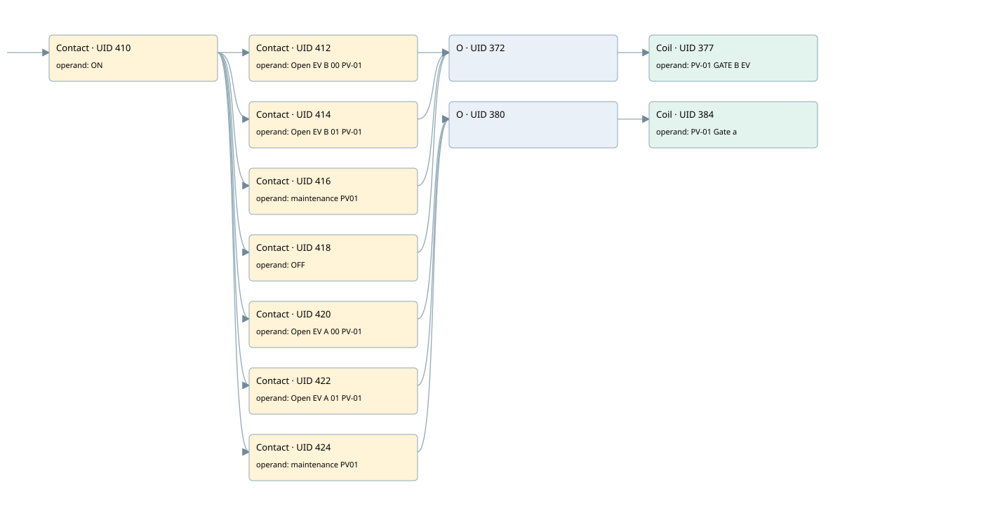

a 48.4 ev-02 valvecommand
r1 scraps gate 2 · 검색 색인 순서 5 · 원본 내부 NID 추정 4
백업 PLF 원본의 2829797 바이트 위치에서 복원한 XML. 검색 문서 1915의 객체 키 16102200df11000000000000와 연결했다. 이름 해석 10/10개. 남은 RefId는 상수 또는 미해석 참조다.
연결 구조 다시 그리기
원본 Part/PCon/Wire를 이용한 연결도다. TIA 화면의 래더 배치 또는 실행 결과를 재현한 그림은 아니다. 핀 연결은 아래 표와 원본 XML을 기준으로 읽는다. 노드 위에 마우스를 두면 피연산자 이름을 볼 수 있다.

접점·코일·블록과 피연산자
| Part UID | Gate | Negated 핀 | 연결 피연산자 |
|---|---|---|---|
| 410 | Contact | operand = ON | |
| 412 | Contact | operand = Open EV B 00 PV-01 | |
| 414 | Contact | operand = Open EV B 01 PV-01 | |
| 416 | Contact | operand = maintenance PV01 | |
| 418 | Contact | operand = OFF | |
| 372 | O | ||
| 377 | Coil | operand = PV-01 GATE B EV | |
| 420 | Contact | operand = Open EV A 00 PV-01 | |
| 422 | Contact | operand = Open EV A 01 PV-01 | |
| 424 | Contact | operand = maintenance PV01 | |
| 380 | O | ||
| 384 | Coil | operand = PV-01 Gate a |
접점 경로를 펼친 조건식
Contact·O/A·비교기의 원본 연결을 읽기 쉽게 펼친 보조 해석이다. POWER는 전원 레일 시작을 뜻한다. 호출 블록·에지·타이머의 내부 동작과 다중 쓰기 순서는 이 표로 실행 검증하지 않았다. 미해석 핀과 RefId는 원문 연결표에서 확인한다.
| UID | 동작 | 대상 | 원본 접점 경로 | 내용 |
|---|---|---|---|---|
| 377 | Coil | PV-01 GATE B EV | ((ON AND Open EV B 00 PV-01) OR (ON AND Open EV B 01 PV-01) OR (ON AND maintenance PV01) OR (ON AND OFF)) | 조건에 따른 Coil 기록 |
| 384 | Coil | PV-01 Gate a | ((ON AND Open EV A 00 PV-01) OR (ON AND Open EV A 01 PV-01) OR (ON AND maintenance PV01)) | 조건에 따른 Coil 기록 |
원본 배선 연결
| Wire UID | 동일 Wire 연결 끝점 |
|---|---|
| 426 | Powerrail {} ↔ Part 410.in |
| 395 | ORef 385 (ON) ↔ Part 410.operand |
| 411 | Part 410.out ↔ Part 412.in ↔ Part 414.in ↔ Part 416.in ↔ Part 418.in ↔ Part 420.in ↔ Part 422.in ↔ Part 424.in |
| 396 | ORef 386 (Open EV B 00 PV-01) ↔ Part 412.operand |
| 413 | Part 412.out ↔ Part 372.in1 |
| 397 | ORef 387 (Open EV B 01 PV-01) ↔ Part 414.operand |
| 415 | Part 414.out ↔ Part 372.in2 |
| 398 | ORef 388 (maintenance PV01) ↔ Part 416.operand |
| 417 | Part 416.out ↔ Part 372.in3 |
| 399 | ORef 389 (OFF) ↔ Part 418.operand |
| 419 | Part 418.out ↔ Part 372.in4 |
| 400 | Part 372.out ↔ Part 377.in |
| 402 | ORef 390 (PV-01 GATE B EV) ↔ Part 377.operand |
| 403 | ORef 391 (Open EV A 00 PV-01) ↔ Part 420.operand |
| 421 | Part 420.out ↔ Part 380.in1 |
| 404 | ORef 392 (Open EV A 01 PV-01) ↔ Part 422.operand |
| 423 | Part 422.out ↔ Part 380.in2 |
| 405 | ORef 393 (maintenance PV01) ↔ Part 424.operand |
| 425 | Part 424.out ↔ Part 380.in3 |
| 406 | Part 380.out ↔ Part 384.in |
| 408 | ORef 394 (PV-01 Gate a) ↔ Part 384.operand |
식별자 해석 근거 10개
| ORef UID | RefId | 이름 | IdentXmlPart 파일 | 해석 방법 |
|---|---|---|---|---|
| 385 | 1 | ON | 0607-IdentXmlPart.xml | UID/RID + search-text + NID agreement |
| 386 | 46 | Open EV B 00 PV-01 | 0607-IdentXmlPart.xml | UID/RID + search-text + NID agreement |
| 387 | 21 | Open EV B 01 PV-01 | 0607-IdentXmlPart.xml | UID/RID + search-text + NID agreement |
| 388 | 47 | maintenance PV01 | 0607-IdentXmlPart.xml | UID/RID + search-text + NID agreement |
| 389 | 48 | OFF | 0607-IdentXmlPart.xml | UID/RID + search-text + NID agreement |
| 390 | 49 | PV-01 GATE B EV | 0607-IdentXmlPart.xml | UID/RID + search-text + NID agreement |
| 391 | 44 | Open EV A 00 PV-01 | 0607-IdentXmlPart.xml | UID/RID + search-text + NID agreement |
| 392 | 20 | Open EV A 01 PV-01 | 0607-IdentXmlPart.xml | UID/RID + search-text + NID agreement |
| 393 | 47 | maintenance PV01 | 0607-IdentXmlPart.xml | UID/RID + search-text + NID agreement |
| 394 | 50 | PV-01 Gate a | 0607-IdentXmlPart.xml | UID/RID + search-text + NID agreement |
검색 코드 보조 자료
참조 명칭을 찾기 위한 자료이며 실행 순서나 AND/OR 관계는 위 연결표로 확인한다.
"on" "open ev b 00 pv-01" "pv-01 gate b ev" "open ev b 01 pv-01" "maintenance pv01" "off" "open ev a 00 pv-01" "pv-01 gate a" "open ev a 01 pv-01" "maintenance pv01"